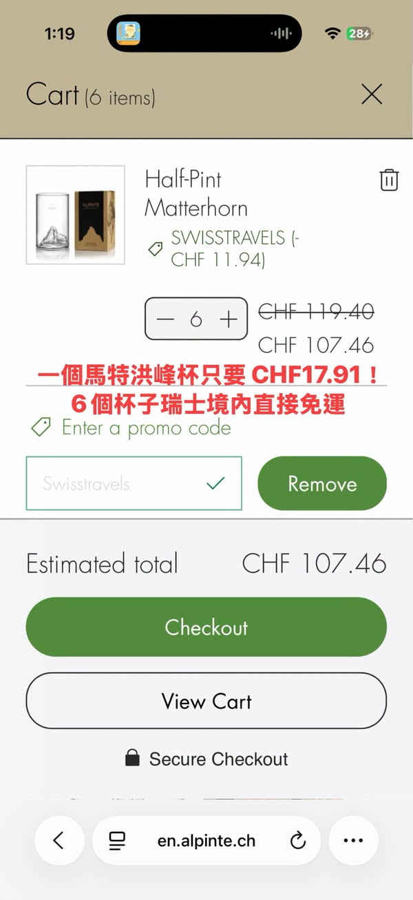

Facebook｜瑞士自由行社團：ALPINTE 馬特洪峰杯舊款出清與瑞士購買提醒

一句話摘要
瑞士自由行社團的管理員貼文指出，ALPINTE 馬特洪峰杯舊款正在出清，並分享官網與因特拉肯、琉森實體店的購買線索。這是一則值得保留的行前採購提示，但所有折扣碼、價格、尺寸庫存、運費、退稅與營業時間都高度即時，訂購或到店前必須向官方／門市重新確認。
貼文記錄的採購資訊
貼文作者稱，冰川天堂販售的馬特洪峰杯價格可能高於線上或其他通路；舊款 ALPINTE 杯正在出清。作者當下觀察到 L size（pint）已售完，M（half-pint）與 S（on the rock）也可能接近停售。
作者建議近期赴瑞士者可比較官網下單與實體門市價格。貼文中提供的社群優惠碼、CHF 金額、瑞士境內免運門檻、寄送台灣運費與促銷價格，均只保留為 2026-10-25 的作者陳述；本篇不將其視為有效報價，也不保證任何折扣仍可使用。
實體店線索
貼文提到 IMI Beauty 的兩個門市，並附上 Google Maps：
- 琉森店（Luzern）：https://maps.app.goo.gl/V3rgJ9mh4zDxxfZw9
- 因特拉肯店（Interlaken）：https://maps.app.goo.gl/5pjKsHpnutVjymMT8
作者也記錄了門市營業時間與報名／報暗號類折扣資訊。營業時間、實際品牌合作、折扣資格與退稅條件都可能異動；建議出發前透過地圖頁、店家官方社群或電話確認，並把開店日、庫存顏色、尺寸與可否退稅一起問清楚。
行前採購檢核表
- 先確認想買的是舊款還是新版，以及 S／M／L 的實際容量與攜帶用途。
- 以官網、門市或正式客服的當日頁面確認是否有貨；不要把社團貼文當庫存系統。
- 比較到店價、境內寄送、寄回台灣運費、行李重量與破損風險，而非只比較杯子單價。
- 若遇到折扣碼、滿額免運或退稅宣稱，先確認適用店別、期限、最低消費、是否可合併及是否排除出清品。
- 脆弱或造型杯具建議確認包裝方式；旅程中採購宜保留收據、外盒與店家聯絡資料。
證據與限制
此篇來源是公開 Facebook 社團貼文，瀏覽器可讀到作者文字、Google Maps 連結與社群互動，但未找到貼文直接連到 ALPINTE 官方商品頁或門市官方活動條款。因此文章清楚區分「作者的旅遊購物觀察」與「需要第一方重新確認的交易條件」。封面為貼文 OpenGraph 圖的本地保存副本，不代表官方產品照。
原始連結
- Facebook 分享連結：https://www.facebook.com/share/p/1DbHUsPcpF/?mibextid=wwXIfr
- Facebook canonical post：https://www.facebook.com/groups/swisstravelmania/posts/2487275118446928/?mibextid=wwXIfr